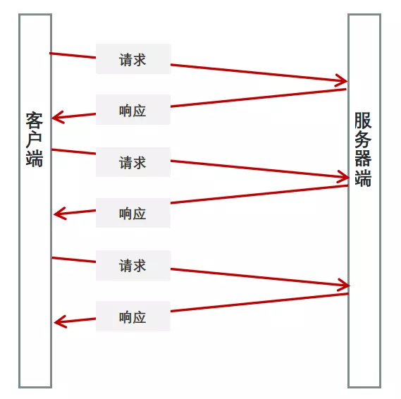

HTML

HTML5
- 提高可用性和改进用户的友好体验;
- 有几个新的标签，这将有助于开发人员定义重要的内容；
- 可以给站点带来更多的多媒体元素(视频和音频)；
- 可以很好的替代 FLASH；
- 语义化标签,当涉及到网站的抓取和索引的时候，对于 SEO 很友好；
- 将被大量应用于移动应用程序和游戏。
contenteditable
可编辑标签类似 input
<p contenteditable="true">这是一个可编辑的段落。</p>
canvas
HTML5 canvas 标签用于绘制图像（通过脚本，通常是 JavaScript）。不过，canvas 元素本身并没有绘制能力（它仅仅是图形的容器） - 您必须使用脚本来完成实际的绘图任务。 getContext() 方法可返回一个对象，该对象提供了用于在画布上绘图的方法和属性。
Audio/Video
HTML5 视频和音频
src 与 href 的区别
- href 是指向网络资源所在位置，建立和当前元素（锚点）或当前文档（链接）之间的链接，用于超链接。
- src 是指向外部资源的位置，指向的内容将会嵌入到文档中当前标签所在位置；在请求 src 资源时会将其指向的资源下载并应用到文档内，例如 js 脚本，img 图片和 frame 等元素。当浏览器解析到该元素时，会暂停其他资源的下载和处理，直到将该资源加载、编译、执行完毕，图片和框架等元素也如此，类似于将所指向资源嵌入当前标签内。这也是为什么将 js 脚本放在底部而不是头部。
本地存储
cookie 非常小，它的大小限制为 4KB 左右。它的主要用途有保存登录信息，这通常就是通过在 Cookie 中存入一段辨别用户身份的数据来实现的
localStorag、sessionStorage： HTML5 提供了两种在客户端存储数据的新方法
| 特性 | Cookie | localStorage | sessionStorage |
|---|---|---|---|
| 数据的生命期 | 一般由服务器生成，可设置失效时间。如果在浏览器端生成 Cookie，默认是关闭浏览器后失效 | 除非被手动清除，否则永久保存 | 仅在当前会话下有效，关闭页面或浏览器后则被清除 |
| 存放数据大小 | 4K 左右 | 一般为 5MB | 一般为 5MB |
| 与服务器端通信 | 每次都会携带在 HTTP 头中，如果使用 cookie 保存过多数据会带来性能问题 | 仅在客户端（即浏览器）中保存，不参与和服务器的通信 | 仅在客户端（即浏览器）中保存，不参与和服务器的通信 |
| 易用性 | 需要程序员自己封装，源生的 Cookie 接口不友好 | 原生接口可以接受，亦可再次封装来对 Object 和 Array 有更好的支持 | 原生接口可以接受，亦可再次封装来对 Object 和 Array 有更好的支持 |
| 用途 | 用于标识用户身份信息 | 用于浏览器端数据处理，或者页面间通信 | 用于浏览器端数据处理，或者页面间通信 |
| 安全性 | 低（设置 https 时，客户端无法直接读取，安全性较好） | 低 | 高 |
EventSource
EventSource 接口用于接收服务器发送的事件(长链接)。它通过 HTTP 连接到一个服务器，以 text/event-stream 格式接收事件, 不关闭连接。

语法：Arr.concat(arr1,arr2,……,arrn)
EventSource.onerror：是一个 EventHandler，当发生错误时被调用，并且在此对象上派发 error 事件。
- EventSource.onmessage：是一个 EventHandler，当收到一个 message 事件，即消息来自源头时被调用。
- EventSource.onopen：是一个 EventHandler，当收到一个 open 事件，即连接刚打开时被调用。
- EventSource.readyState 只读 ，一个 unsigned short 值，代表连接状态。可能值是 CONNECTING (0), OPEN (1), 或者 CLOSED (2)。
- EventSource.url 只读 一个 DOMString，代表源头的 URL。
- EventSource.close() 如果存在，则关闭连接，并且设置 readyState 属性为 CLOSED。如果连接已经被关闭，此方法不做任何事。
//客户端
const EventSour = new EventSource('/api/home');
// 监听指定类型的事件（可以监听多个）
EventSour.addEventListener('myopen', function(event) {
console.log('myopen', event.data);
});
//服务端
app.get('/api/home', (ewq, res) => {
// 根据 EventSource 规范设置报头
res.writeHead(200, {
'Content-Type': 'text/event-stream' // 规定把报头设置为 text/event-stream
});
// 用write返回事件流，事件流仅仅是一个简单的文本数据流，每条消息以一个空行(\n)作为分割。
res.write('event: myopen' + '\n' + 'data:' + '消息内容' + '\n' + 'retry:' + '2000' + '\n\n');
});
SEO
SEO（Search Engine Optimization）：汉译为搜索引擎优化。是一种方式：利用搜索引擎的规则提高网站在有关搜索引擎内的自然排名。目的是让其在行业内占据领先地位，获得品牌收益。很大程度上是网站经营者的一种商业行为，将自己或自己公司的排名前移
iframe
- 程序调入静态页面比较方便;
- 页面和程序分离;
缺点
- iframe 有不好之处：样式/脚本需要额外链入，会增加请求。另外用 js 防盗链只防得了小偷，防不了大盗。
- iframe 好在能够把原先的网页全部原封不动显示下来,但是如果用在首页,是搜索引擎最讨厌的.那么你的网站即使做的在好,也排不到好的名次! 如果是动态网页，用 include 还好点！但是必须要去除他的 html,head,title,body 标签！
- 框架结构有时会让人感到迷惑，特别是在多个框架中都出现上下、左右滚动条的时候。这些滚动条除了 会挤占已经特别有限的页面空间外，还会分散访问者的留心力。访问者遇到这种站点往往会立刻转身离开 。他们会想，既然你的主页如此混乱，那么站点的其他部分也许更不值得阅读。
- 链接导航疑问。运用框架结构时，你必须保证正确配置所有的导航链接，如不然，会给访问者带来很大 的麻烦。比如被链接的页面出现在导航框架内，这种情况下访问者便被陷住了，因为此时他没有其他地点 可去。
- 调用外部页面,需要额外调用 css,给页面带来额外的请求次数;